Lynx Drive
Redesigning the industry’s mission-critical irrigation platform for clarity, speed, and confidence.

Powerful enough for experts. Clear enough for everyone.
Lynx Drive is used to manage complex irrigation across golf courses, sports fields, and expansive landscapes. Years of feature growth had made the product reliable—but increasingly difficult to navigate, learn, and operate under pressure.
My mandate was not to make a legacy product look newer. It was to rebuild the mental model: bring the right information forward, reduce cognitive load, and create a foundation that could scale across the Lynx ecosystem.
Start with the work, not the interface.
I combined field observation, stakeholder interviews, support-ticket analysis, and prototype testing to understand how different roles used Lynx throughout the day.
Morning checks, live interventions, end-of-day planning.
Mapping the daily rhythm revealed where the interface needed to be fast, quiet, and decisive.
Every role needed a different view of the same system.
Superintendents planned, technicians responded, and coordinators maintained the operational backbone.

Research translated into personas, journey phases, and a shared view of the highest-value moments.
Turn system complexity into a usable point of view.
We aligned the team around three principles: information at a glance, guided workflows, and role-optimised entry points. These became the filter for every navigation decision, component, and prototype.
Observe the people, constraints, hardware, and data around the product.
Find the shared model and make the problem legible to the team.
Prototype states and flows across desktop, mobile, and field conditions.
Test the edge cases and make the system durable in production.
Make the map a command centre.
The redesign brought system health, alerts, zones, and next actions into one spatial workspace. Navigation was reorganised around the user’s daily phases rather than the product’s underlying architecture.

A more legible control map gave operators a faster path from signal to decision.

Field Notes connected on-site observations back to the shared operational system.
A foundation for the wider Lynx ecosystem.
High-fidelity prototypes were tested with users and used to align product, engineering, and leadership. The resulting patterns became a foundation for subsequent desktop and mobile work.
Less hunting. More confident action.
Critical states, roles, and next steps are easier to see and easier to share.
Design systems are product strategy.
Reusable patterns created leverage beyond a single feature or release.
Lynx Mobile
Taking the same systems thinking into the field, with mobile control built for crews, gloves, and dead zones.
View Lynx Mobile